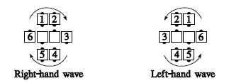
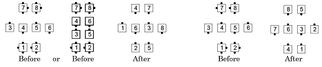
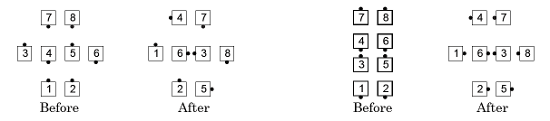

From 1/4 tag, 3/4 tag, a Wave Between Parallel Mini-Waves, or Diamonds (but not Facing Diamonds): The dancers in the wave Swing. The very center dancers Trade while the outer six move one position, in the direction shown in the diagrams below (i.e., as determined by the ends of the wave), turning as necessary to end in a 1/4 Tag. This ends Swing and Circle 1/4.

Repeat the entire above action, if necessary:
The Facing Couples Rule applies to the centers.
Swing and Circle 1/4:

Note: Dancers who end in the outer six can roll if their facing direction changed in the final part of the call. For example, Swing and Circle 1/4 and Roll:
